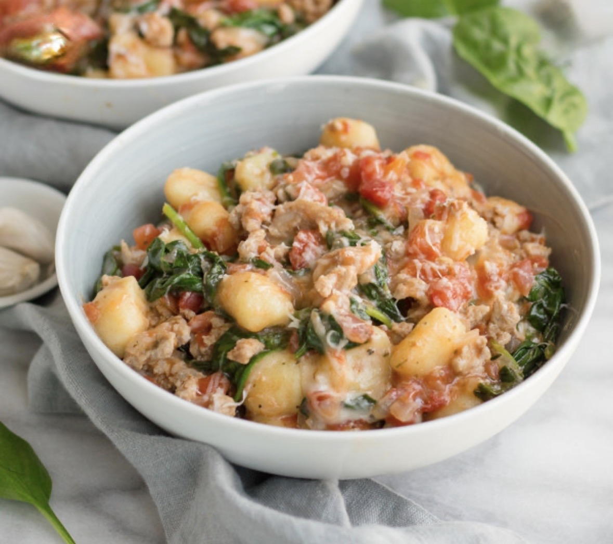

Ingredients
- 1 pound Italian sausage
- 1 pound gnocchi
- 28 ounce crushed tomatoes
- 4 garlic cloves minced
- 1 yellow onion diced
- 3/4 tsp kosher salt
- 1/4 tsp red pepper flakes
- 1 tsp dried oregano
- 2 dried bay leaves
- 1 tbsp olive oil optional, if not enough fat from sausage
- 1/2 cup Ricotta full fat preferred
- 1.5 cups mozzarella shredded
- Fresh basil optional, for garnish
Instructions
- Heat a large, oven-proof sauté pan over medium high heat. Brown sausage (5-8 minutes) remove from pan with a slotted spoon and set aside. Leave 1 tablespoon of fat in the pan, pour off remaining fat. If there is not enough fat left, add olive oil to pan until there is one tablespoon of fat in pan (or use all olive oil).
- Add onion to pan and saute until soft, about 5 minutes. Add, garlic, oregano and red pepper flakes, stir until fragrant, 30-60 seconds.
- Reduce heat to low, add tomato sauce, salt and bay leaves to pan, return sausage to pan simmer for about 10 minutes, stirring occasionally to keep from sticking.
- After simmering for at least 10 minutes, remove bay leaves. Add Gnocchi to pan (you do not need to boil or cook the gnocchi before adding it), stir until gnocchi is fully mixed and immersed in the sauce.
- Dollop spoonfuls of ricotta on top of the sauce, then sprinkle shredded mozzarella evenly all over the top.
- To finish on the stovetop: Cover and simmer on the lowest heat setting until cheese has melted, 3-5 minutes.
- To finish under the broiler: Move oven rack to the highest position. Place pan in the oven on the highest rack. Turn on broiler and broil for 1-2 minutes, until cheese is melted, bubbly and starting to brown. Watch closely to avoid burning.
- When ready to serve, garnish with fresh shredded basil if desired.